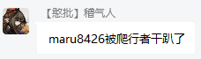

XBridgeN：一般配置
当XBridgeN检测到配置文件不存在时，会自动生成配置文件（需要注意的是，每当XBridgeN有版本更新时，请留意XBridgeN的更新说明有没有涉及到配置文件变动）。
配置文件支持热修改，修改保存后无需重启程序即可生效。
生物实体数据
./config/mobs.json - 用于保存实体（玩家、生物）命名。
当玩家/生物被杀时，会通过该文件的内容将死亡事件转发到群内
示例配置：
{
"Arrow": "箭",
"Bat": "蝙蝠",
"Creeper": "爬行者",
"Blaze": "烈焰人"
}

玩家事件配置
./config/players_event.json - 配置群服联动功能。
示例配置：
{
"join_group_detection": { //加群云黑检测功能
"enable": true, //是否启用加群云黑检测
"request_auto_process": true //加群云黑检测后是否自动处理加群请求
},
"player_join": { //玩家进服
"enable": true, //是否开启玩家进服时的群消息提示
"message": "玩家 {player} 加入了服务器" //玩家离服时的提示文本
},
"player_left": { //玩家离服
"enable": true, //是否开启玩家离服时的群消息提示
"message": "玩家 {player} 离开了服务器" //玩家离服时的提示文本
},
"player_die": { //玩家死亡事件
"enable": true, //是否开启玩家在服内死亡时的群消息提示
"cause_by_mobs": "玩家 {player} 被 {mob} 杀死了", //玩家在服内被生物杀死时的提示文本
"cause_unknown": "玩家 {player} 啪唧一下死掉了"
},
"player_chat": { //群服聊天转发
"enable": true, //是否启用群服聊天转发
"toServer": "§b[{group_name}] §a<{sender}> {content}", //群消息转发到服务器的文本格式
"toGroup": "[{server_name}] <{player}>\n{content}" //服务器聊天消息转发到群的文本格式
},
"whitelist_helper": { //白名单助手
"enable": true, //是否启用白名单助手功能
"member_left_with_bind": "{player}（QQ:{member_qqid}）退出了群聊，正撤销其所有绑定", //玩家退群时的提示文本
"member_not_bind": "未查询到相关绑定信息！", //玩家未绑定时的提示文本
"member_already_bind": "你已经绑定过了！", //玩家已绑定时的提示文本
"xboxid_already_bind": "该Xbox ID已被 {bad_qqid} 绑定，请联系管理员解决", //玩家XBox ID和其他人冲突时的提示文本
"member_already_add": "该玩家已经添加过白名单了！" //玩家已加过白名单时的提示文本
},
"runcmd_nofication": true, //是否开启指令执行反馈（在群内返回指令执行结果）
"player_not_admin": "您不是管理员，无权执行该操作！", //玩家无权操作时的提示文本
"member_left": "成员 {player} 退出了群聊", //玩家退出群聊（未绑定）时的提示文本
"server_connect_failed": "服务器未开启或连接中断，请稍后重试！" //服务器连接中断时的提示文本（仅在执行指令、增删白名单时出现）
}
| 占位符 | 说明 |
|---|---|
| {player} | 玩家Xbox ID |
| {group_name} | 群名称 |
| {server_name} | 服务器名称 |
| {sender} | 群消息发送者的昵称（群昵称） |
| {member_qqid} | 玩家（成员）的QQ号码 |
| {bad_qqid} | 与本人Xbox ID冲突的已绑定QQ号码 |
| {mob} | 攻击玩家的生物名称 |
玩家数据
./config/players_info.json - 用于保存玩家的各项信息。
一般情况下该配置文件无需改动。如果需要为玩家设置XBridgeN管理员，请将该玩家的permission值修改为1。
示例配置：
[
{
"name": "Asurin", //玩家昵称（Xbox ID）
"qqid": 824907403, //玩家QQ账号
"permission": 0, //玩家权限，默认为0。0为普通成员，1为管理员
"enable": false //白名单绑定状态，false为已绑定、未添加，true为已绑定、已添加
}
]
正则表达式
请参阅下一节内容：XBridgeN：高级配置